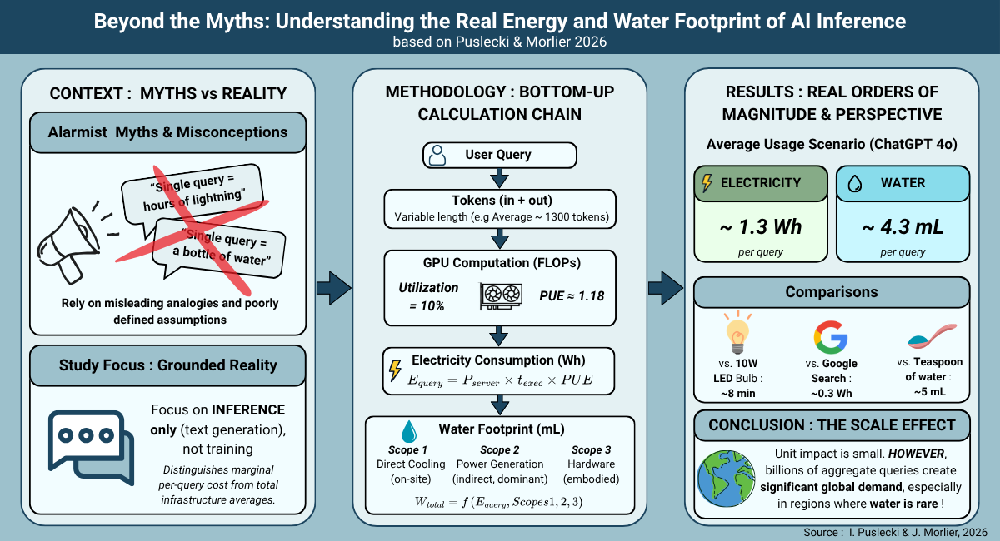

Cette analyse scientifique vise à déconstruire les idées reçues et les discours médiatiques alarmistes sur l'impact écologique de l'IA. En utilisant une méthodologie "Bottom-up", l'article établit des ordres de grandeur physiques fiables pour l'utilisation (inférence) des modèles de langage à grande échelle.
Pour un scénario d'usage classique générant environ 1300 tokens, l'impact individuel est maîtrisé :
Équivaut à une ampoule LED de 10W allumée pendant 8 minutes.
Moins qu'une petite cuillère à café (5 mL).
Traduction du nombre de jetons (tokens) en opérations mathématiques réelles sur le matériel.
Mesure de l'énergie électrique réelle des serveurs (ex: NVIDIA H100) incluant l'efficacité du Data Center (PUE).
Calcul de l'eau nécessaire pour le refroidissement direct et la production de l'électricité consommée.
L'étude souligne des distinctions cruciales souvent omises :
L'article appelle à un débat basé sur des faits physiques et la transparence plutôt que sur le sensationnalisme.
J'ai développé un simulateur interactif basé sur cette étude pour vous permettre de calculer l'empreinte de n'importe quel scénario d'inférence.
Accéder au Simulateur